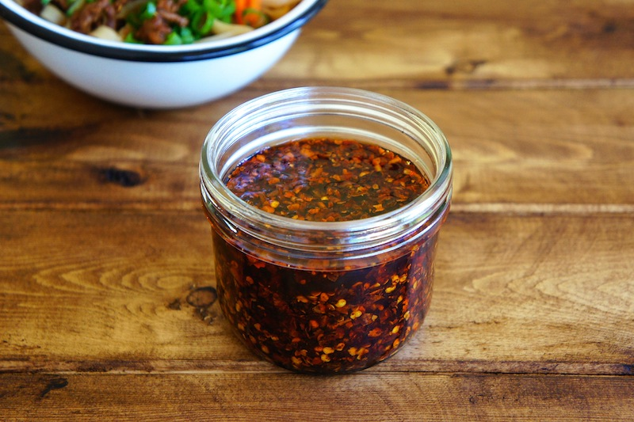

Best oil in the universe

This is a chili oil recipe from Joshua Weissman's youtube channel in text form
Ingredients:
- 1l of neutral tasting oil (peanut/sunflower seed/canola)
- 6 star anise
- 6 cloves of garlic
- 10g coriander seeds
- 1 cinnamon stick
- 20g Sichuan peppercorns
- 4 black cardamom
- 110g Sichuan chili flakes (can use regular chili flakes instead)
- 10g salt
- 14g black vinegar
Dishes:
- 1 big metal bowl
- 1 medium saucepan
How to cook:
- Add anise, garlic, coriander, cinnamon, cardamom and Sichuan peppercorns into a pot together with all of your oil.
- Heat the pot with spices in it up to 115 degrees celsius and let it simmer for 2 hours (at some point garlic will turn brown and you will have to take it out).
- Add all of chili flakes together with salt and vinegar into a bowl and thoroughly mix everything together.
- Once 2 hours have passed heat the pot up to 140-145 degrees and immediately pour it into your bowl through a strainer (be careful as it will foam up a lot).
- The oil is ready! Let it cool, transfer it into jars and keep it in the fridge.
How to eat:
I add this oil to everything. It gives food a very pleasant aroma and some heat. I would recommend you add it to dumplings (or even better gyoza), soups and pasta. I even tried it on some vanilla ice cream and it was a fun combination between sweet, cold and spicy, hot oil :P